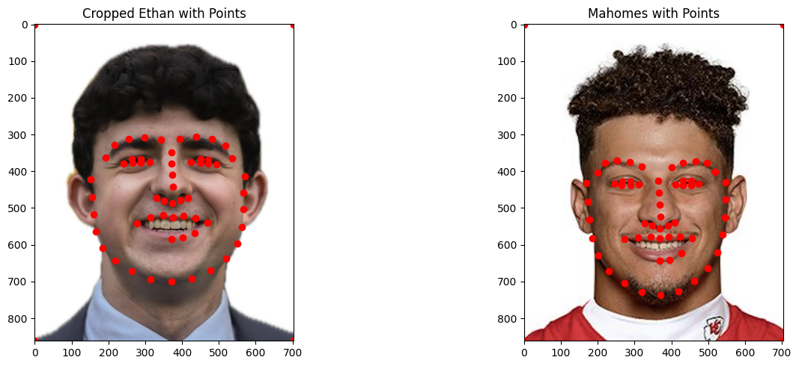

Introduction
This project explores how to smoothly morph between two images by warping the mesh of correspondence points of the two images and then cross-dissolving the colors. Through these two operations, the average face of a population can also be computed, as well as caricatures extrapolated from the average face.
Defining Correspondences
To morph between two images, we first need to define a set of correspondences that define features between the two images. We can do this by hand, but for this project, I decided to try and automatically detect these corrspondences using a SIFT detector.
Preprocessing the images
To start, the faces of images could be very different sizes, as well as the image resolution and size.
To address this, I used a SIFT detector to find the "face box" of the image, I then added padding and cropped the image around the face box.
Next, to address the difference in image resolution and aspect ratio, I scaled the image to a preset aspect ratio and then resized the image.
Original Ethan

Original Mahomes
Cropped Ethan
Cropped Mahomes
Automating Feature Detection
I used the same SIFT detector to find the correspondences between the two images. This outputs a set of key points.
Brief description of the gradient magnitude computation: To calculate the gradient magnitude I simply summed the squares of the vertical and horizontal edge images, then square rooted them. This is similar to the L2 norm because light dims according to the inverse square law. I then used a threshold to binarize the image, setting all values greater than 0.1 to 1 and the rest to 0.
Computing the "Mid-way" Face
Approach
Correspondence Points and Delaunay Triangulation
To compute the mid-way face, we first calculate the average shape by taking a weighted element-wise average of the correspondence points from both images. For the exact mid-way face, we use a weighting factor of 0.5.
Next, we use Delaunay triangulation (via scipy.spatial.Delaunay) on these average points to create a mesh of triangles. This mesh serves as the basis for our warping process.
For each triangle in the mesh, we compute an affine transformation that maps it from the average shape to its corresponding triangle in each original image. This is done by converting the points to homogeneous coordinates and solving a system of linear equations using np.linalg.solve.
To apply the warp, we iterate through each triangle in the average shape. For every pixel within a triangle (determined using skimage.draw.polygon), we apply the inverse of the affine transformation to find its corresponding position in the original image.
Finally, we use bilinear interpolation to determine the color of each warped pixel, sampling from the four nearest pixels in the original image. This process is repeated for both input images, creating two warped versions that align with the average shape.
The mid-way face is then created by blending these two warped images, typically using a simple average or cross-dissolve operation.
Results
Mahomes Warped into Ethan
Ethan Warped into Mahomes
Morphed Midway Face
The Morph Sequence
Approach
To create a morph sequence, we extend our mid-way face technique to generate a series of intermediate images. Instead of using a fixed warping factor of 0.5, we vary it smoothly from 0 to 1 over the course of the sequence.
For each frame, we warp both source images to an intermediate shape determined by the current warping factor. This ensures that facial features align progressively throughout the transition.
After warping, we blend the pixel colors of the two aligned images using a dissolve factor. This factor also changes linearly from 0 to 1, creating a smooth transition in both shape and color.
By repeating this process with incrementally changing factors, we produce a sequence of images that smoothly morphs from the first face to the second.
I also threaded the operation of calculating each frame so that it would run in parallel and speed up the time it took. This brought down the average time to calculate 20 frames from ~33 seconds to ~17 seconds.
Results
The "Mean Face" of a population
Approach
To compute the average face of a population, we first calculate the mean shape by averaging the positions of corresponding points across all faces. This creates a set of average landmarks that represent the typical facial structure of the group.
Using our previously established warping technique, we then transform each individual face in the population to align with this average shape. This process ensures that all facial features are properly aligned before we combine them.
Finally, we calculate the average color values for each pixel across all the warped faces. This step blends the textures and colors of all faces in the population, resulting in a composite image that represents the "mean face" of the group.
Results
Average Face
Average Face Warped into Ethan
Ethan Warped into Average Face
Examples
Here are some more examples of faces warped into the average face.
Caricatures: Extrapolating from the mean
Approach
To create caricatures, we exaggerate the differences between an individual face and the average face of a population. We use the formula: caricature = scale * (individual - average) + average, where scale is greater than 1.0. This amplifies the unique features of the individual face.
Interestingly, this formula can be rearranged to: caricature = scale * individual + (1 - scale) * average. This is similar to the weighted average formula used in our previous warping techniques, but now the scale factor can exceed 1.0.
We apply this concept using our existing warping function, setting warp_frac to a value greater than 1 (e.g., 1.75) and dissolve_frac to 0.0. This exaggerates the individual's features relative to the average face.
Results
The resulting caricature emphasizes the distinctive features of the individual face compared to the population average. For example, if a person has slightly larger eyes than average, the caricature will make them significantly larger. Similarly, other facial features like nose width, mouth shape, or eyebrow position may be exaggerated based on how they differ from the average.
Bells & Whistles
Music Video
As a fun addition to this project, I created a music video using the face morphing technique. The video showcases a smooth transition between various faces, synchronized with music.
This video demonstrates the practical application of the face morphing algorithm in creating engaging visual content.
Other Bells & Whistles
- Automatice Face Detection and Cropping
- Automatic Feature Detection and Corrspondence Generation